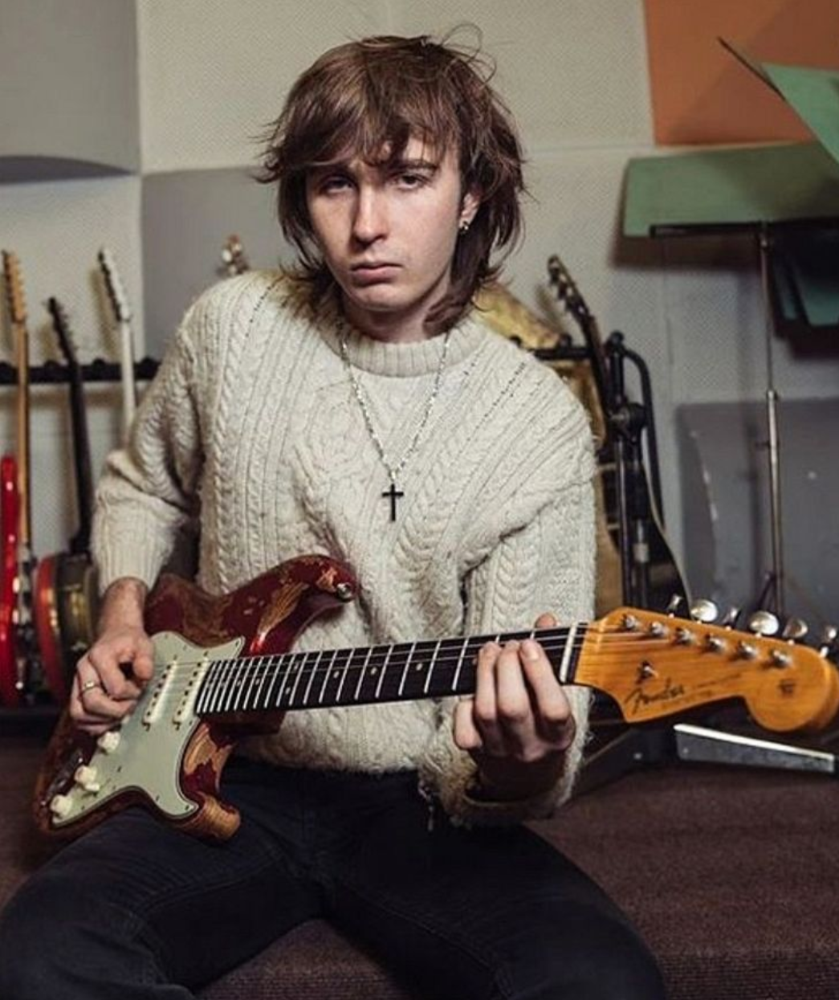
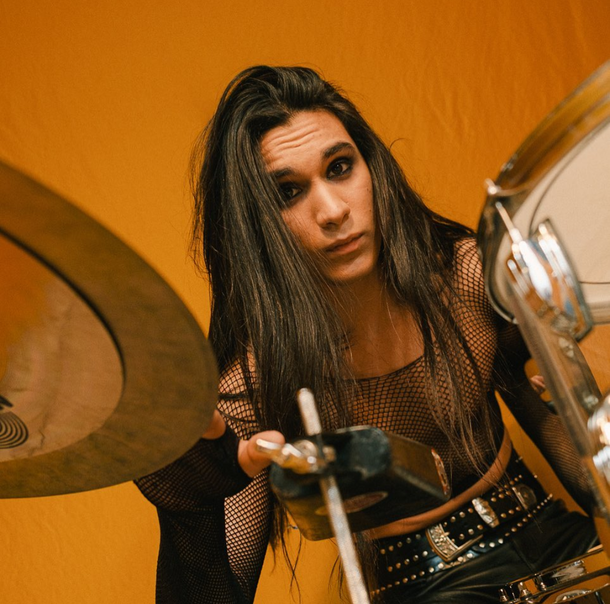

|
En sus inicios este grupo se dedicaba a cantar otras canciones de otros artistas en las calles de Roma pero comenzaron a grabar sus propios temas cuando comenzaron a participar en varios concursos para bandas. Måneskin lanzó su segundo álbum Teatro d'ira: Vol. I (2021), que encabezó las listas de varios países de Europa e incluyó los temas «Vent'anni» y «I Wanna Be Your Slave», que también gozaron de éxito comercial. Tras ganar el Festival de la Canción de San Remo,la banda representó a Italia en el Festival de la Canción de Eurovisión 2021 con la canción «Zitti e buoni», que ganó el concurso con un total de 524 puntos en la final, lo que representó la tercera victoria para el país.

|
Es un cantante y compositor italiano conocido por ser el vocalista de la banda de rock italiana Måneskin, que ganó el Festival de Música de Sanremo 2021 y el Festival de la Canción de Eurovisión 2021 |

|
Es una bajista y compositora italiana, fundadora de la banda de rock Måneskin en 2016 junto con el guitarrista Thomas Raggi |
|  | Es un guitarrista de rock and roll que saltó a la fama como miembro de la banda italiana Måneskin. Sus compañeros de banda junto a él, son reconocidos por haber sido coronados como los vencedores del Festival de Eurovisión 2021. Antes de la fama Conoció a sus compañeros de banda cuando iban al instituto en Monteverde, Roma. Eligieron su nombre tras inscribirse en el concurso local Pulse. |
|  | Es romano como el resto de sus compañeros de la banda y comenzó a demostrar sus dotes para la música cuando tenía cinco años, destaca por su larga melena negra y su cuidado estilo, que ha conquistado a miles de fans en toda Europa. Tiene más de nueve hermanos y el haberse criado en una familia tan grande le ha enseñado a saber formar parte de un equipo |
En 2017, Måneskin (El cual significa luz de luna) participó en la décima temporada del concurso de talentos "X Factor Italia", quedando en segundo lugar. Luego lanzó en el transcurso de ese mismo programa de concursos, el EP "Chosen", que fue certificado oro por la FIMI (Federación de la Industria Musical Italiana). En 2018, presentaron su segundo EP, de nombre "Morirò da re", que fue certificado con doble disco de platino. Ese año participaron en la séptima edición de Radio Italia Live - Il concerto, un evento musical organizado por Radio Italia. Más tarde actuaron en la sexta edición del Wind Summer Festival, realizado en Roma. También abrieron en la gira italiana de la banda Imagine Dragons, llevado a cabo en Milán.
Luego de esas actuaciones, Måneskin lanzó "Torna a casa", su primer tema en llegar al tope de la lista de los mejores sencillos de la FIMI. Su álbum debut, denominado "Il ballo della vita", contiene además de la homónima, dos partes: "Fear For Nobody" y "L'altra dimensione". Fueron lanzadas en 2019, dando lugar a la gira promocional Il ballo della vita Tour. En 2020, luego de su gira de conciertos por Europa, Måneskin estrenó el sencillo "Vent'anni", con un vídeo musical publicado en su canal de YouTube. En 2021, Måneskin participó en la 71° edición del Festival de San Remo, con la canción "Zitti e buoni", resultaron ganadora. Ese triunfo le permitió representar a su país, con ese mismo tema, en el Eurovisión 2021, Festival de la Canción de Eurovisión, celebrado en el Ahoy Rotterdam, Róterdam, Países Bajos, en mayo de 2021. También resultó ganadora.
Haciendo clic a reproducir en el siguiente audio podremos escuchar la cancion con la que este grupo gano Eurovisión 2021(Zitti E Buoni):
| Discografía | |
|---|---|
| Año | Canción |
| 2017 | Chosen |
| 2018 | Il Ballo Della Vita |
| 2019 | Fear for Nobody |
| 2020 | Vent'anni |
| 2021 | Teatro D'Ira - Vol.I |
| 2021 | I Wanna Be Your Slave |